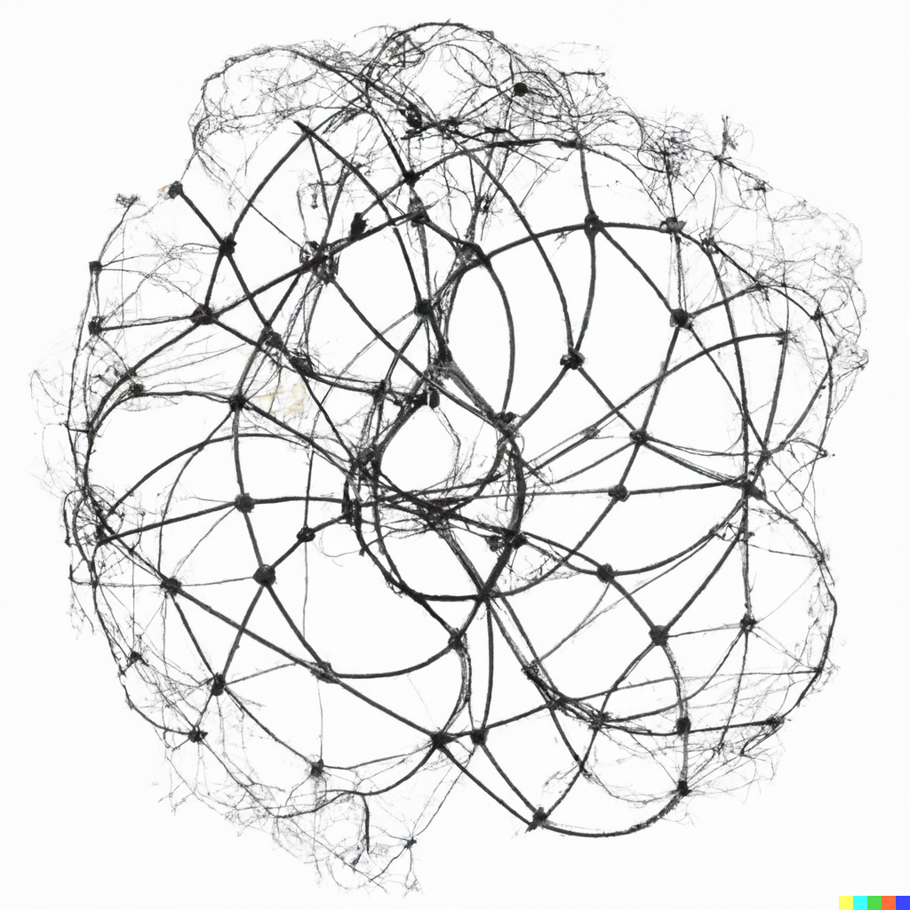
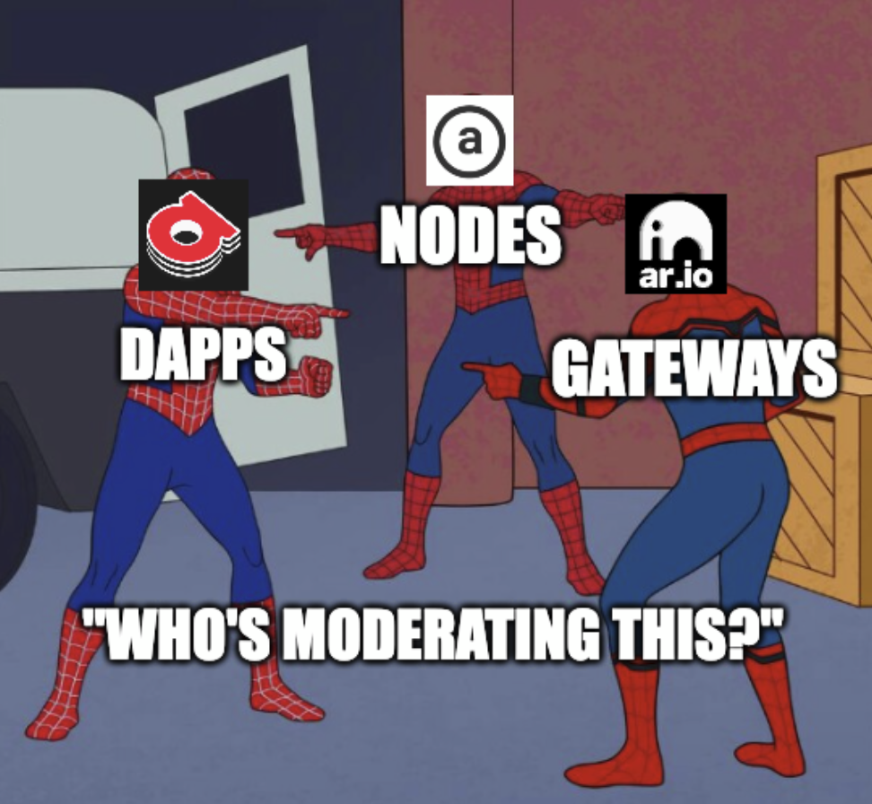
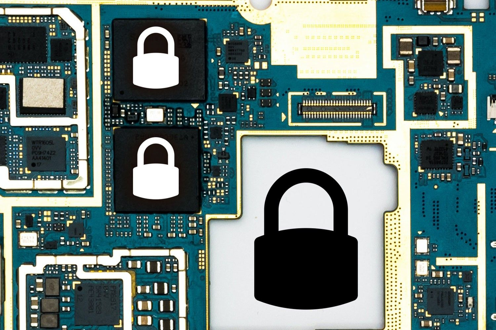

The Many Layers of Permanence: Censorship and Content Moderation
by @JonnieSparkles
Originally published: 2023-04-07
Introduction
Arweave's tagline "Pay once, store forever" is often met with skepticism. The concept of permanent data is novel to those outside of the "Arweave bubble" and even for those inside, it can be debatable. As a result, we are often approached with questions ranging in tone from FUD to genuine curiosity.
In this article we'd like to kick off an exploration of the nucleus that these questions and concerns hover around: How permanent is permanent?
The answer is not straight forward, is not binary or singular, and depends on which lens you are looking through. Ultimately, there are many layers of permanence to be explored.
We'll start by looking at censorship and content moderation then continue exploring other layers in future articles.
Censorship and Content Moderation
Censorship is the suppression or prohibition of information that is considered obscene, politically unacceptable, or a threat to the security, influence, or political standing of a person, group, or nation. It is often used to maintain power, control public opinion, or protect the status quo. However, the ability to intentionally moderate content can also be used for the protection of individual rights and copyrighted material.
As opposed to an absolute statement like Arweave is "censorship free", we prefer to use the term censor-resistant as Arweave adopts a self-censorship or voluntary censorship model. This means that whatever you upload to the permaweb cannot be removed entirely from the network by a single person, central entity, nation, or organization. But it's a different story when retrieving content from the permaweb. As an individual, you can choose to use applications that limit the kind of information you can see on the permaweb. At the same time, an entity operating network infrastructure or building applications may have self-imposed content policies or be subject to moderate content to comply with local regulations. The core principle of the network is that every participant has the autonomy to decide which content they want to store, serve, and see.
Network Configuration
There are three main entities that can effect censorship and moderation on network data:
- Mining nodes which are responsible for network security, storing data, and sharing it to other miners
- Gateway nodes which are responsible for reading and writing data to / from the network, caching files, as well as querying and indexing that data
- Applications which end users utilize to interact with data on the network

Each individual mining node operator can choose to not store (aka blacklist or ban) certain files based on regional regulations (i.e., if something is copyrighted or illegal) or for whatever other reason they choose. They can even blocklist transactions from specific addresses entirely. However, by not storing these files they are less likely to receive rewards through the mining protocol. Arweave's incentivize mechanism ensures that many replications of file are stored across the network — a near-future network upgrade will boost the minimum replication rate to many thousands. The incentive model also encourages regionally dispersed mining nodes to join the network — the more miners, the more replicas of your data persist across the network.
Likewise, individual gateway operators and application developers can choose to not serve certain files based on regional regulations or for reasons of their choosing. By design, there are no built-in disincentives in the network's protocol to discourage censorship as there may be valid reasons such as blocking of copyrighted material or malicious programs. Even so, gateways and applications may face decreased usage and negative reputation as a result of abusive censorship.

Complete censorship requires the coordination and compliance of every entity at each level of The Permanence Pie (a concept that we'll introduce in a future article) which would be quite the undertaking for a decentralized and permissionless network such as Arweave.
Encrypted Files
Files are not natively encrypted by Arweave while uploading to the network. However, prior to uploading, users can choose to encrypt the files themselves or through a third party application such as ArDrive which performs the encryption on their behalf. Raw encrypted files are publicly viewable by any user of the network but they will just appear as random ciphertext — unless you have the keys or another method to decrypt those files.

Regarding moderation of encrypted files: if a user uploads an encrypted file containing regionally illegal or illicit files, it is possible that a network service provider (miner, gateway, or app) in that region could become aware of its contents and flag it for content moderation. Again, this capability is intentional and necessary for individual autonomy and compliance with local regulations.
Censorship by "51% Attack"
Some users may be concerned that a well funded bad actor or nation state could assume majority control of the network and force removal of content. This is sometimes known as a 51% attack and while a valid concern, it is extremely unlikely for the following reasons:
- Arweave utilizes a modified proof of work consensus algorithm in which the work performed by miners results in data persistence and replications. Miner nodes are physical hardware devices which have associated equipment, internet, electric, and maintenance / overhead costs. To gain control of the network, a malicious attacker would have to procure hardware and expend energy greater than the sum of all other miners on the network.
- Even if the malicious actor's brute force attack was successful, they would only have domination of the network's hashrate. The result would be a network fork: Fork A, the now compromised chain, would exist alongside Fork B, the original, untampered chain. Ultimately the users of the network get to choose which fork to follow. So if Fork A is undesirable, they can continue to use Fork B. The attacker would then have to continuously spend resources on creating a successful fork.
- Finally, as long as any single miner node stores or a gateway caches the "censored" file*, the data will continue to persist and be available on the network. So to totally purge a file, the attacker would either have to control all nodes or block them from accessing the network.
*technically, miner nodes store smaller broken up parts of individual files known as chunks which are then reassembled by a client or gateway to recreate the full file but this is a topic for another time.
Conclusion
Arweave is a global decentralized network. It distributes data to thousands of nodes which makes it extremely impractical, if not impossible, for any centralized actor to remove all instances of specific data from the entire network. As projects such as ar.io come online, the trend towards decentralization will continue to grow and become more robust. A node or application may go offline or choose to self-censor data, but the redundancy of the network keeps the entire repository of uploaded information available.